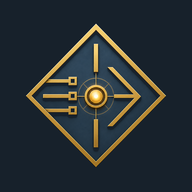

The abbreviated identity and visual signal system of Encoded Radiance Studio.
Encoded Radiance Studio / ER Identity / IS-03
The Meaning of the Encoded Radiance Symbol
The Encoded Radiance Studio symbol represents the structured movement of
information, creative intention, and human direction through a digital
production process.
Three signal paths enter the symbol, converge at the central radiance node,
and continue through a defined output path. Together, these elements represent
concept development, creative interpretation, technical refinement, production
review, and intentional delivery.

Encoded Radiance Studio Isometric Signal symbol, designation IS-03.
Symbol Elements
Isometric Frame
The outer diamond defines the structured environment in which a project is
planned, developed, reviewed, and prepared for presentation.
It represents foundation, precision, order, dimensional balance, and a
controlled space for creative production.
Three Signal Inputs
The three horizontal paths represent information, source material, creative
intent, technical requirements, and human direction entering the studio
workflow.
Together, the channels represent the capture, interpretation, organization,
and translation of source inputs before final production.
Radiance Node
The illuminated center represents the point where ideas, information, sound,
visual concepts, and technical instructions are examined and refined.
It is the creative center in which structured inputs are transformed into a
coherent studio production.
Output Path
The forward-facing path represents completed work proceeding from the studio
process toward its approved destination.
It signifies presentation, publication, distribution, audience connection, and
intentional delivery.
Vertical Axis
The vertical axis connects the upper and lower sections of the symbol through
the central radiance node.
It represents alignment, balance, continuity, process integrity, and structural
stability from the original source through final delivery.
IS-03 Designation
IS-03 identifies the approved Isometric Signal visual system used by Encoded
Radiance Studio.
The designation provides a consistent reference across the public website,
brand assets, production records, documentation, and approved presentation
materials.
What ER Represents
ER is the abbreviated identity mark for Encoded Radiance
Studio. It represents the development of encoded digital structure into
radiant visual, audible, interactive, and technology-directed creative work.
ER is not a separate studio, company, or rights holder. It is the compact brand
identifier that connects Encoded Radiance Studio’s visual systems, sound
presentations, motion work, web environments, and digital productions under
one coordinated identity.
Encoded Structure
Ideas are organized into defined concepts, source files, technical decisions,
production records, and documented workflows.
Radiant Output
Completed work communicates clarity, light, motion, sound, atmosphere, and
purposeful creative direction.
Integrated Media
The ER identity connects visual design, audio presentation, motion media,
interactive webpages, and selected digital production technologies.
Source Integrity
Projects are reviewed for authorship, attribution, source-file origin, approved
revisions, ownership documentation, and publication readiness.
Brand Color Meaning
Radiant Gold
Radiant Gold represents illumination, purposeful creativity, refinement, and
the visible center of the studio identity.
#D7B878
Slate Blue
Slate Blue represents technical structure, digital production, controlled
depth, and visual stability.
#43596B
Deep Space
Deep Space establishes the primary dark environment that supports contrast,
focus, dimensional depth, and the radiant elements of the symbol.
#17212B
Unified Meaning
Together, the symbol represents the relationship between structure and light,
information and purpose, creative development and intentional delivery.
It identifies Encoded Radiance Studio as a digital production environment
guided by human direction, defined processes, technical precision, source
review, and carefully prepared creative output.
Current studio focus:
Encoded Radiance Studio develops original visual, audio, motion, web, and
technology-directed creative work under the direction of Sarai Hannah Ajai.
Certain productions may incorporate professionally directed AI-assisted
creative technologies as part of the production workflow. Creative direction,
editorial review, and final publication decisions remain under the supervision
of Encoded Radiance Studio. Additional licensing and production information is
available in the
Rights and Production Disclosure
.